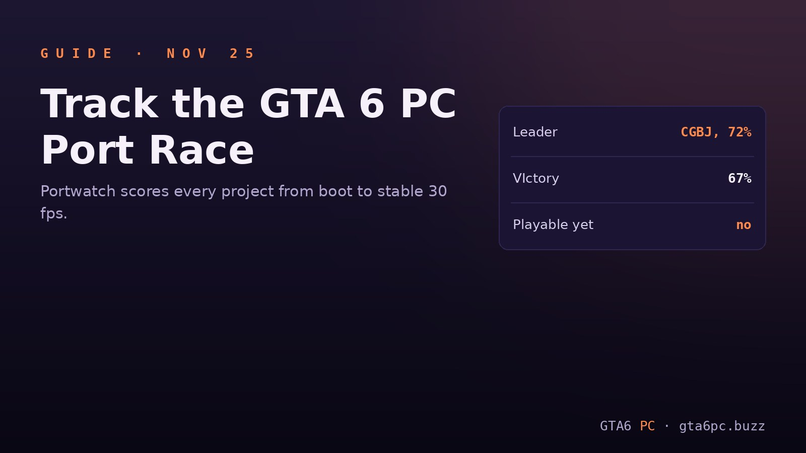

How to follow the GTA 6 PC port race with Portwatch
Every few hours, the unofficial race to run GTA 6 on PC moves, and the claims move faster than the code. Portwatch is the community scoreboard that tracks it all in one place: which projects have booted the game, which have reached the menus, and which have rendered the world. Here is how to read it, what its numbers actually mean, and what it cannot tell you.

What Portwatch is
Portwatch is a community-run live scoreboard for the unofficial race to run GTA 6 on PC. Its site, portwatch-vi.xyz, tracks every serious attempt to recompile, emulate or port the leaked Xbox Series X|S build to PC, and scores each one on a single shared scale. TweakTown describes it as the tracker that monitors the whole race, and XDA cites its numbers when reporting which project is ahead.
The tracker exists because the race moves fast and the claims move faster. In the first two days after the executable leaked, five projects appeared, one shut down, and a private build reportedly went from menus to in-game. Portwatch puts each claim in one place with the evidence behind it, so readers can check a headline against the tracker's own list instead of taking a video at its word.
How the scale works
Portwatch scores progress from 0 to 100 percent, but the scale is not linear. The milestones are spaced out so that the hard parts count for more than the easy ones.
| Score | Milestone | What it means |
|---|---|---|
| 55% | Main menu | The game boots and its menus run |
| 70% | In-game | The game world loads and renders, even badly |
| 85% | 30 fps | The game holds 30 frames per second in-game |
| 100% | Stable | The game runs reliably at playable performance |
The gap between 70 and 85 percent is the whole race. Getting a world to load is one job; getting it to render correctly, with lighting, textures and a steady frame rate, is a much bigger one. TweakTown notes the last stretch will likely need much more development time, effort and AI tokens. A project can sit at 72 percent for a long time while the work underneath it barely moves.
Where the race stands on November 24
Here is what the tracker reported on November 24, 2026. Scores move daily, so check the live page for the current numbers.
| Project | Score | Milestone | Public? |
|---|---|---|---|
| CGBJ | 72% | In-game | No, private build |
| VIctory | 67% | Past the main menu, early in-game rendering | Yes, open source |
| XCL | Menu stage | Menus at 30 fps | Yes, open source |
| Xbox2Windows | Early | Boots, first frame | Yes |
| TuxBox | Early | Boots, first frame | Yes |
CGBJ leads because it reportedly gets a player moving and talking to NPCs, even at about 4 frames per second with no lighting. VIctory is the leading public project: menus at 30 fps, saves working, and early in-game rendering at roughly 0.6 to 2 frames per second. Our in-game rendering report has the full details on both.
What each milestone actually means
A milestone on Portwatch is a technical checkpoint, not a promise that the game is close to playable. Here is how to read the four big ones.
Main menu (55 percent). The game boots and its menus respond. This is where most projects spent their first day. It proves the executable runs, but it says nothing about the game world.
In-game (70 percent). The world loads and something renders. At this stage the image is usually flat, unlit and missing most of its detail, and the frame rate is measured in seconds per frame. CGBJ reached this with a player moving and talking to NPCs, but at about 4 frames per second.
30 fps (85 percent). The game holds 30 frames per second inside the world. No project is close to this yet. This is the milestone that would turn a demo into something a person could watch, though not necessarily play.
Stable (100 percent). The game runs reliably, with working graphics, audio, input and saves. Nothing in the race is near this, and the tracker is clear that the last stretch is the longest.
What Portwatch does not do
Portwatch is a scoreboard, not a download site. It hosts no game files, links to no downloads, and offers no playable build of GTA 6. The projects it tracks are code on GitHub, and they need the leaked Xbox build to run at all. There is still no known way to dump the game from an Xbox on current firmware, so the work depends on leaked files, which carries legal risk.
The tracker also does not verify every claim itself. DSOGaming, reporting on the CGBJ in-game claim, noted that PortWatch had reportedly confirmed it, while urging readers to take the footage with a grain of salt. XDA was careful in the same way, saying it had not independently verified the clips it reported on. Treat a tracker entry as a lead, not a verdict.
How to spot a fake milestone
The port race has become a magnet for fake videos and download scams, and the tracker is only useful if you read it skeptically. A claim is worth believing when several of these check out.
- The project is listed on Portwatch with a milestone and a source, not just a video.
- The project's GitHub page shows commits that match the claim, with recent activity from more than one contributor.
- An established outlet such as TweakTown, XDA or DSOGaming has reported the same milestone.
- The footage shows the game's own screens, menus or world, and not a recycled clip from GTA 5.
Walk away when a claim has no tracker entry, no public code, and only a short video; when it asks you to download an installer, a "port" or a "crack"; or when it promises a playable game today. Every one of those is a known scam pattern, and our download scams guide lists them in detail.
Quick answers
What is Portwatch?
Portwatch is a community-run live scoreboard at portwatch-vi.xyz that tracks every serious attempt to run the leaked GTA 6 Xbox build on PC. It scores each project on one shared scale and links to the evidence behind each milestone.
How does Portwatch score progress?
On a scale where 55 percent means the main menu, 70 percent means in-game, 85 percent means 30 fps, and 100 percent means stable. The scale is not linear, so the last stretch takes far longer than the first.
Which project is leading?
As of November 24, 2026, the private build CGBJ leads at 72 percent, reportedly in-game. The leading open-source project is VIctory at 67 percent, with menus at 30 fps and early in-game rendering.
Can I download a GTA 6 PC port from Portwatch?
No. Portwatch hosts no game files and links to no downloads. Projects like VIctory and XCL are open source and can be built from their GitHub pages, but they need the leaked Xbox build to run, which carries legal risk.
How do I know a port claim is real?
Check whether Portwatch lists it with a source, whether the project's GitHub page shows matching commits, and whether independent outlets have reported it. A claim with no tracker entry, no code and only a short video is not verified.
Last updated . We update this page when Rockstar announces anything new.
Sources
- TweakTown: GTA 6 reportedly reaches in-game rendering on PC just a day after Xbox executable leak
- XDA: An unofficial GTA 6 PC port is making progress, and developers have the first in-game visuals to show for it
- DSOGaming: Grand Theft Auto 6 unofficial PC port CGBJ now reaches in-game
- NextGenUpdate: GTA 6 PC port progress continues to be made after multiple project shutdowns